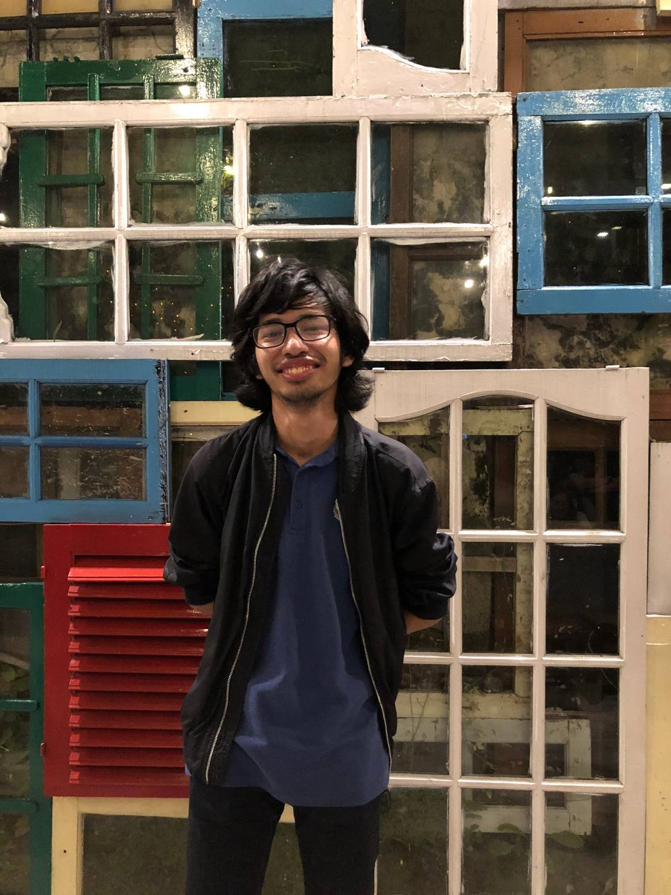

Halo Teman-Teman!

Namaku Rafael Sean Putra. Teman-temanku memanggilku Rafael atau
Sean
Aku sekarang merupakan mahasiswa di
ITB.
Senang berkenalan denganmu!
Proyek Saya:
MAS-PartO
MAS-PartO (Mesin Absensi SPARTA Otomatis) adalah sebuah program yang dibuat menggunakan bahasa Python dan bertujuan untuk mempermudah proses absensi pada SPARTA (osjur HMIF). Program akan mengecek file chat ZOOM dan akan mengedit sheet Presensi SPARTA. Cek proyek di sini